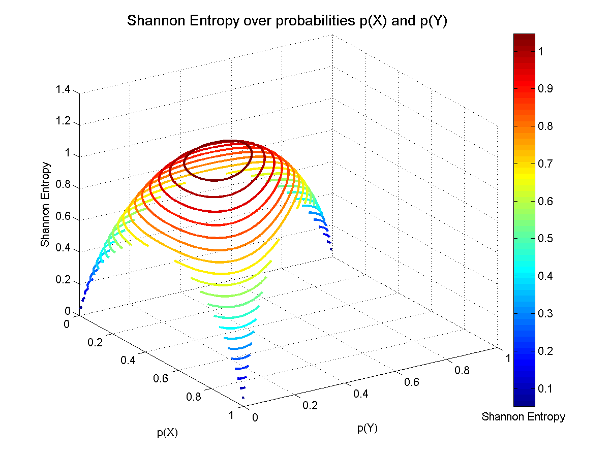
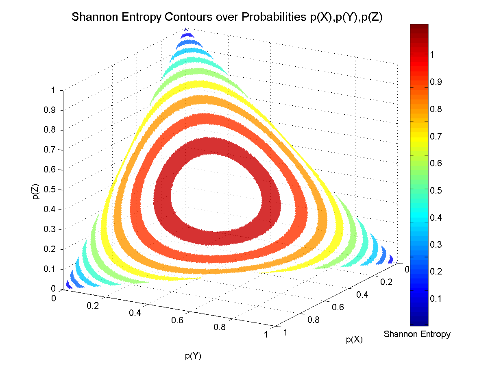
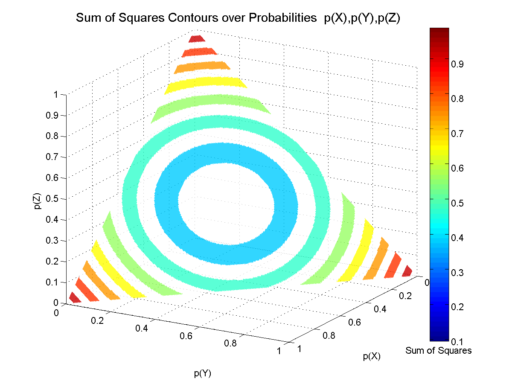
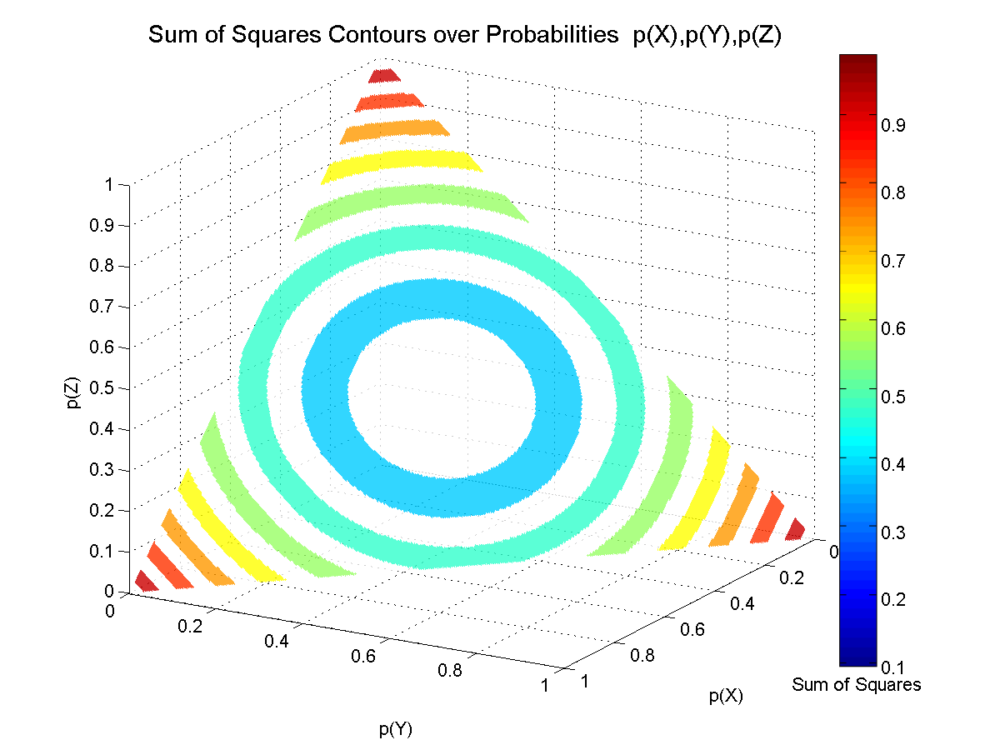
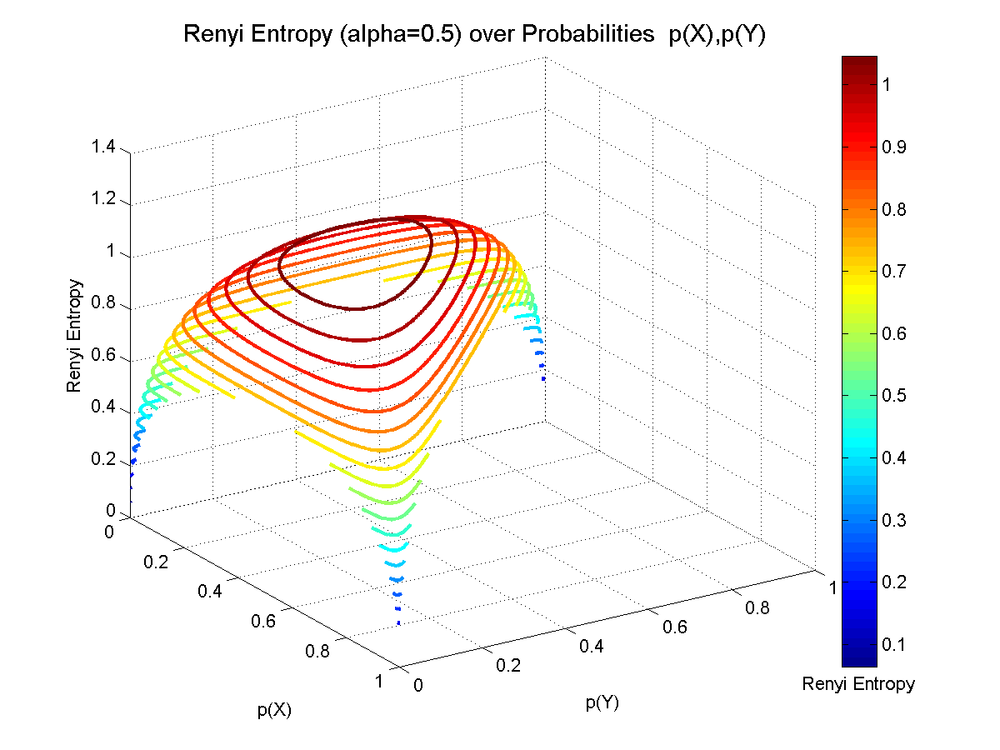
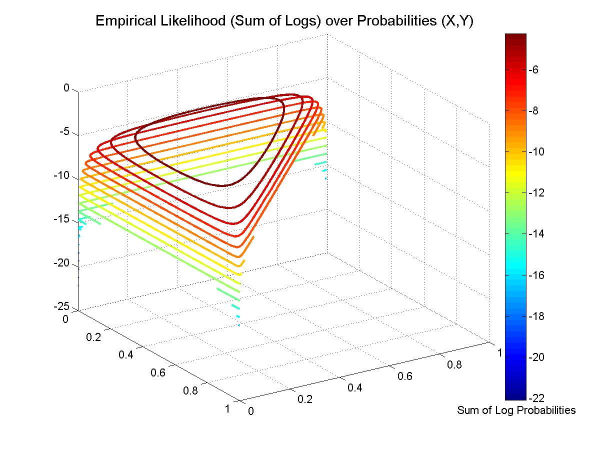
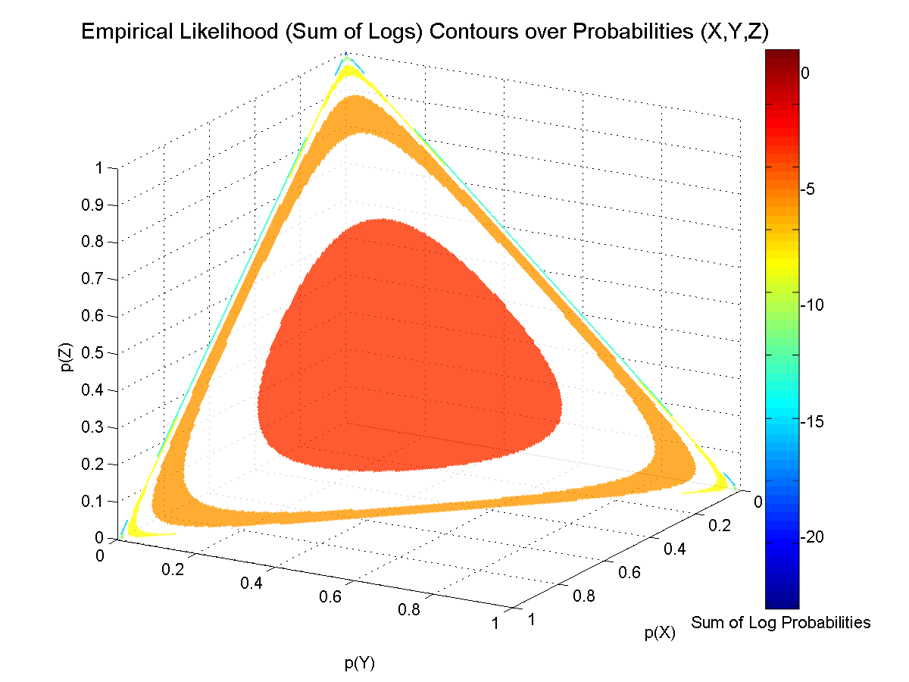

Visualization of Several Objective Functions
Visualization of several objective functions for the two parameter [p(X) and p(Y)] and three parameter [p(X), p(Y) and p(Z)] problems. The objective functions are the Shannon Entropy, Sum of Squares, Renyi Entropy (for two values of α) and the Empirical Likelihood. For the two parameter problem (top figure) the height (Z-axis) and color of the surface indicates the value of the objective function, for particular values of p(X) and p(Y). For the three parameter problem (bottom figure), the color of the surface corresponds to the value of the objective function. The surface is constrained to be on the simplex where p(X) + p(Y) + p(Z) = 1.
For more details, see Chapter 3 (Shannon Entropy), Chapter 13 (Renyi Entropy, Empirical Likelihood).


 



